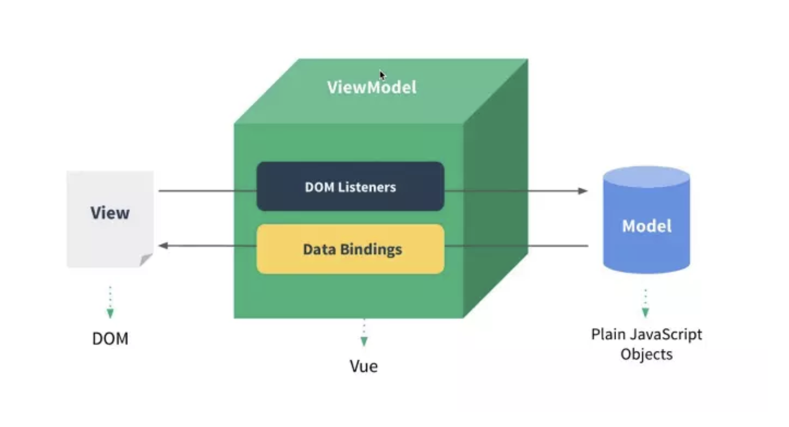
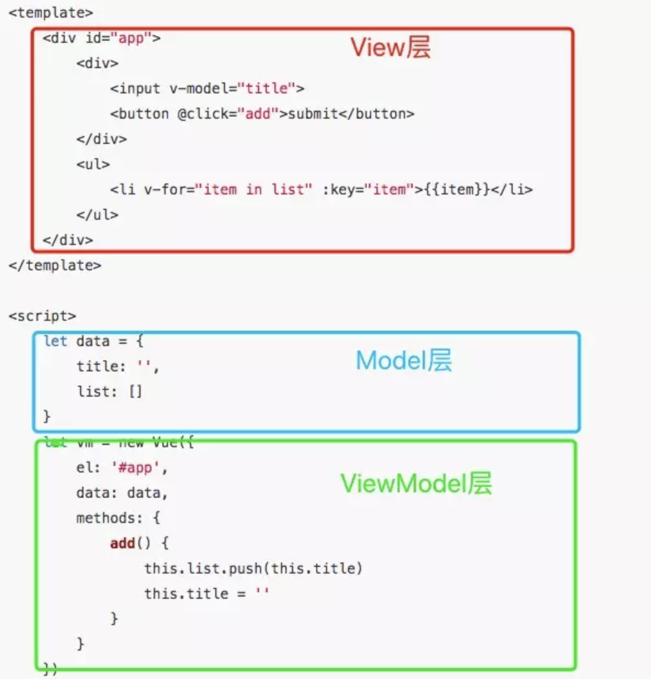

<!DOCTYPE html>
<html>
<head><meta name="generator" content="Hexo 3.8.0">
  <meta charset="utf-8">
  
  <title>vue 实现原理(一) | guowj</title>
  <meta name="viewport" content="width=device-width, initial-scale=1, maximum-scale=1">
  
  <meta name="keywords" content="jsvueES5原理发布订阅数据劫持单向绑定">
  
  
  
  
  <meta name="description" content="&amp;nbsp;&amp;nbsp;&amp;nbsp;&amp;nbsp;&amp;nbsp;&amp;nbsp;学习vue也有一段时间了。为了给自己加深记忆,本篇文章将通过从零开始仿写一个vue.js,实现vue中的单向绑定、双向绑定和 computed。因为篇幅较长，所以本篇主要实现单向绑定，下一篇将实现双向绑定和 computed。">
<meta name="keywords" content="js,vue,ES5,原理,发布订阅,数据劫持,单向绑定">
<meta property="og:type" content="article">
<meta property="og:title" content="vue 实现原理(一)">
<meta property="og:url" content="https://gwjacqueline.github.io/vue-实现原理(一)/index.html">
<meta property="og:site_name" content="guowj">
<meta property="og:description" content="&amp;nbsp;&amp;nbsp;&amp;nbsp;&amp;nbsp;&amp;nbsp;&amp;nbsp;学习vue也有一段时间了。为了给自己加深记忆,本篇文章将通过从零开始仿写一个vue.js,实现vue中的单向绑定、双向绑定和 computed。因为篇幅较长，所以本篇主要实现单向绑定，下一篇将实现双向绑定和 computed。">
<meta property="og:locale" content="zh-CN">
<meta property="og:image" content="https://gwjacqueline.github.io/images/MVVM.png">
<meta property="og:image" content="https://gwjacqueline.github.io/images/vueMVVM.png">
<meta property="og:updated_time" content="2019-06-20T03:36:55.000Z">
<meta name="twitter:card" content="summary">
<meta name="twitter:title" content="vue 实现原理(一)">
<meta name="twitter:description" content="&amp;nbsp;&amp;nbsp;&amp;nbsp;&amp;nbsp;&amp;nbsp;&amp;nbsp;学习vue也有一段时间了。为了给自己加深记忆,本篇文章将通过从零开始仿写一个vue.js,实现vue中的单向绑定、双向绑定和 computed。因为篇幅较长，所以本篇主要实现单向绑定，下一篇将实现双向绑定和 computed。">
<meta name="twitter:image" content="https://gwjacqueline.github.io/images/MVVM.png">
  
    <link rel="alternate" href="/atom.xml" title="guowj" type="application/atom+xml">
  

  

  <link rel="icon" href="/css/images/mylogo.png">
  <link rel="apple-touch-icon" href="/css/images/mylogo.png">
  
    <link href="//fonts.googleapis.com/css?family=Source+Code+Pro" rel="stylesheet" type="text/css">
  
  <link href="https://fonts.googleapis.com/css?family=Open+Sans|Montserrat:700" rel="stylesheet" type="text/css">
  <link href="https://fonts.googleapis.com/css?family=Roboto:400,300,300italic,400italic" rel="stylesheet" type="text/css">
  <link href="//netdna.bootstrapcdn.com/font-awesome/4.0.3/css/font-awesome.css" rel="stylesheet">
  <style type="text/css">
    @font-face{font-family:futura-pt; src:url("../css/fonts/FuturaPTBold.otf") format("woff");font-weight:500;font-style:normal;}
    @font-face{font-family:futura-pt-light; src:url("../css/fonts/FuturaPTBook.otf") format("woff");font-weight:lighter;font-style:normal;}
    @font-face{font-family:futura-pt-italic; src:url("../css/fonts/FuturaPTBookOblique.otf") format("woff");font-weight:400;font-style:italic;}
}

  </style>
  <link rel="stylesheet" href="/css/style.css">

  <script src="/js/jquery-3.1.1.min.js"></script>
  <script src="/js/bootstrap.js"></script>

  <!-- Bootstrap core CSS -->
  <link rel="stylesheet" href="/css/bootstrap.css">

  
    <link rel="stylesheet" href="/css/dialog.css">
  

  

  
    <link rel="stylesheet" href="/css/header-post.css">
  

  
  
  
    <link rel="stylesheet" href="/css/vdonate.css">
  

</head>
</html>


  <body data-spy="scroll" data-target="#toc" data-offset="50">


  
  <div id="container">
    <div id="wrap">
      
        <header>

    <div id="allheader" class="navbar navbar-default navbar-static-top" role="navigation">
        <div class="navbar-inner">
          
          <div class="container"> 
            <button type="button" class="navbar-toggle" data-toggle="collapse" data-target=".navbar-collapse">
              <span class="sr-only">Toggle navigation</span>
              <span class="icon-bar"></span>
              <span class="icon-bar"></span>
              <span class="icon-bar"></span>
            </button>

            
              <a class="brand" style="
                 margin-top: 0px;" href="#" data-toggle="modal" data-target="#myModal">
                  
              </a>
            
            
            <div class="navbar-collapse collapse">
              <ul class="hnav navbar-nav">
                
                  <li> <a class="main-nav-link" href="/">首页</a> </li>
                
                  <li> <a class="main-nav-link" href="/archives">归档</a> </li>
                
                  <li> <a class="main-nav-link" href="/categories">分类</a> </li>
                
                  <li> <a class="main-nav-link" href="/tags">标签</a> </li>
                
                  <li><div id="search-form-wrap">

    <form class="search-form">
        <input type="text" class="ins-search-input search-form-input" placeholder>
        <button type="submit" class="search-form-submit"></button>
    </form>
    <div class="ins-search">
    <div class="ins-search-mask"></div>
    <div class="ins-search-container">
        <div class="ins-input-wrapper">
            <input type="text" class="ins-search-input" placeholder="请输入关键词...">
            <span class="ins-close ins-selectable"><i class="fa fa-times-circle"></i></span>
        </div>
        <div class="ins-section-wrapper">
            <div class="ins-section-container"></div>
        </div>
    </div>
</div>
<script>
(function (window) {
    var INSIGHT_CONFIG = {
        TRANSLATION: {
            POSTS: '文章',
            PAGES: '页面',
            CATEGORIES: '分类',
            TAGS: '标签',
            UNTITLED: '(无标题)',
        },
        ROOT_URL: '/',
        CONTENT_URL: '/content.json',
    };
    window.INSIGHT_CONFIG = INSIGHT_CONFIG;
})(window);
</script>
<script src="/js/insight.js"></script>

</div></li>
            </ul></div>
          </div>
                
      </div>
    </div>

</header>


      
            
      <div id="content" class="outer">
        
          <section id="main" style="float:none;"><article id="post-vue-实现原理(一)" style="width: 75%; float:left;" class="article article-type-post" itemscope itemprop="blogPost">
  <div id="articleInner" class="article-inner">
    
    
      <header class="article-header">
        
  
    <h1 class="thumb" itemprop="name">
      vue 实现原理(一)
    </h1>
  

      </header>
    
    <div class="article-meta">
      
	<a href="/vue-实现原理(一)/" class="article-date">
	  <time datetime="2019-06-15T07:00:37.000Z" itemprop="datePublished">2019-06-15</time>
	</a>

      
    <a class="article-category-link" href="/categories/Vue/">Vue</a>

      
	<a class="article-views">
	<span id="busuanzi_container_page_pv">
		阅读量<span id="busuanzi_value_page_pv"></span>
	</span>
	</a>

      

    </div>
    <div class="article-entry" itemprop="articleBody">
      
        <blockquote>
<p>&nbsp;&nbsp;&nbsp;&nbsp;&nbsp;&nbsp;学习<code>vue</code>也有一段时间了。为了给自己加深记忆,本篇文章将通过从零开始仿写一个<code>vue.js</code>,实现<code>vue</code>中的单向绑定、双向绑定和 computed。因为篇幅较长，所以本篇主要实现单向绑定，下一篇将实现双向绑定和 computed。</p>
</blockquote>
<a id="more"></a>
<h2 id="Vue-js-中的-MVVM"><a href="#Vue-js-中的-MVVM" class="headerlink" title="Vue.js 中的 MVVM"></a>Vue.js 中的 MVVM</h2><div align="center"><br>  <br></div>

<p>&nbsp;&nbsp;&nbsp;&nbsp;&nbsp;&nbsp;<strong>MVVM</strong>就是一种双向数据绑定，它的特点是数据影响视图，视图影响数据。MVVM 由<code>View</code>、<code>ViewModel</code>、<code>Model</code>三部分组成。<code>View</code>层代表的是视图、模板,负责将<code>Model(数据模型)</code>转化为 UI 展示出来。<code>Model</code>层代表的是模型、数据。可以在<code>Model</code>层中定义数据修改和操作的业务逻辑。<code>ViewModel</code> 是一个同步 View 和 Model 的对象。在<strong>MVVM</strong>的架构下，<code>View</code>层和<code>Model</code>层并没有直接联系，而是通过<code>ViewModel</code>层进行交互。<code>ViewModel</code>层通过双向数据绑定将<code>View</code>层和<code>Model</code>层连接起来。使得 View 层和 Model 层的同步工作完全是自动的。因此开发者只需关注业务逻辑，无需手动操作 DOM，复杂的数据状态维护交给 MVVM 统一来管理。<strong>MVVM</strong>的特点是数据影响视图，视图影响数据。<code>Augular</code>是通过脏值检测去实现双向绑定，<code>Vue</code>靠的是数据劫持和发布订阅模式。下图是<code></code>Vue.js<code>中**MVVM**的体现我们知道</code>Vue<code>不兼容IE8以下的版本，因为它的核心实现靠的是一个ES5的方法:</code>Object.defineProperty`。</p>
<div align="center"><br>  <br></div>

<h2 id="Object-defineProperty"><a href="#Object-defineProperty" class="headerlink" title="Object.defineProperty"></a>Object.defineProperty</h2><p><strong>Object.defineProperty() 方法会直接在一个对象上定义一个新属性，或者修改一个对象的现有属性，并返回这个对象,即第一个参数 obj</strong></p>
<figure class="highlight plain"><table><tr><td class="gutter"><pre><span class="line">1</span><br></pre></td><td class="code"><pre><span class="line">Object.defineProperty(obj, prop, descriptor)</span><br></pre></td></tr></table></figure>
<blockquote>
<p>obj：必需。目标对象`<br><br>prop：必需。需定义或修改的属性的名字<br><br>descriptor：必需。目标属性所拥有的特性</p>
</blockquote>
<figure class="highlight javascript"><table><tr><td class="gutter"><pre><span class="line">1</span><br><span class="line">2</span><br><span class="line">3</span><br><span class="line">4</span><br><span class="line">5</span><br><span class="line">6</span><br></pre></td><td class="code"><pre><span class="line"><span class="built_in">Object</span>.defineProperty(obj, <span class="string">"test"</span>, &#123;</span><br><span class="line">    configurable: <span class="literal">true</span> | <span class="literal">false</span>, <span class="comment">// 目标属性是否可以使用delete删除或是否可以再次修改属性的特性（writable, configurable, enumerable）</span></span><br><span class="line">    enumerable: <span class="literal">true</span> | <span class="literal">false</span>, <span class="comment">//此属性是否可以被枚举（使用for...in或Object.keys()）</span></span><br><span class="line">    value: 任意类型的值, <span class="comment">//属性对应的值,可以使任意类型的值，默认为undefined</span></span><br><span class="line">    writable: <span class="literal">true</span> | <span class="literal">false</span> <span class="comment">//属性的值是否可以被重写</span></span><br><span class="line">&#125;);</span><br></pre></td></tr></table></figure>
<p><strong>注意：一旦使用 Object.defineProperty 给对象添加属性，如果不设置属性的特性，那么 configurable、enumerable、writable 这些值默认都为 false</strong></p>
<h3 id="属性-getter-setter-方法"><a href="#属性-getter-setter-方法" class="headerlink" title="属性 getter/setter 方法"></a>属性 getter/setter 方法</h3><figure class="highlight javascript"><table><tr><td class="gutter"><pre><span class="line">1</span><br><span class="line">2</span><br><span class="line">3</span><br><span class="line">4</span><br><span class="line">5</span><br><span class="line">6</span><br><span class="line">7</span><br><span class="line">8</span><br><span class="line">9</span><br><span class="line">10</span><br><span class="line">11</span><br><span class="line">12</span><br><span class="line">13</span><br><span class="line">14</span><br><span class="line">15</span><br><span class="line">16</span><br><span class="line">17</span><br><span class="line">18</span><br><span class="line">19</span><br></pre></td><td class="code"><pre><span class="line"><span class="keyword">var</span> obj = &#123;&#125;;</span><br><span class="line"><span class="keyword">var</span> val = <span class="number">3</span>;</span><br><span class="line"><span class="built_in">Object</span>.defineProperty(obj, <span class="string">"test"</span>, &#123;</span><br><span class="line">    <span class="keyword">get</span>: function() &#123;</span><br><span class="line">        <span class="comment">//当获取值的时候触发的函数</span></span><br><span class="line">        <span class="keyword">return</span> val;</span><br><span class="line">    &#125;,</span><br><span class="line">    <span class="keyword">set</span>: function(value) &#123;</span><br><span class="line">        <span class="comment">//当设置值的时候触发的函数,设置的新值通过参数value拿到</span></span><br><span class="line">        val = value;</span><br><span class="line">    &#125;</span><br><span class="line">&#125;);</span><br><span class="line"><span class="comment">//获取值</span></span><br><span class="line"><span class="built_in">console</span>.log(obj.test); <span class="comment">//3</span></span><br><span class="line"></span><br><span class="line"><span class="comment">//设置值</span></span><br><span class="line">obj.test = <span class="number">7</span>;</span><br><span class="line"></span><br><span class="line"><span class="built_in">console</span>.log(obj.test); <span class="comment">//7</span></span><br></pre></td></tr></table></figure>
<p><strong>注意：<code>Object.defineProperty</code> 使用了 getter 或 setter 方法，不允许使用 writable 和 value 这两个属性。get 或 set 不是必须成对出现，任写其一就可以。如果不设置方法，则 get 和 set 的默认值为 undefined</strong><br><br></p>
<h3 id="属性-configurable-和-writable-一起使用的情况"><a href="#属性-configurable-和-writable-一起使用的情况" class="headerlink" title="属性 configurable 和 writable 一起使用的情况"></a>属性 configurable 和 writable 一起使用的情况<br><br></h3><hr>
<table>
<thead>
<tr>
<th style="text-align:center"></th>
<th style="text-align:center">configurable：true<br> writable:true</th>
<th style="text-align:center">configurable：true<br> writable:false</th>
<th style="text-align:center">configurable：false<br> writable:true</th>
<th style="text-align:center">configurable：true<br> writable:true</th>
</tr>
</thead>
<tbody>
<tr>
<td style="text-align:center">修改属性的值</td>
<td style="text-align:center">✔️</td>
<td style="text-align:center">✔️<br>(可通过重设 value 标签修改)</td>
<td style="text-align:center">✔️</td>
<td style="text-align:center">❌</td>
</tr>
<tr>
<td style="text-align:center">通过属性赋值修改属性的值</td>
<td style="text-align:center">✔️</td>
<td style="text-align:center">❌</td>
<td style="text-align:center">✔️</td>
<td style="text-align:center">❌</td>
</tr>
<tr>
<td style="text-align:center">delete 该属性返回 true</td>
<td style="text-align:center">✔️</td>
<td style="text-align:center">✔️</td>
<td style="text-align:center">❌</td>
<td style="text-align:center">❌</td>
</tr>
<tr>
<td style="text-align:center">修改 getter/setter 方法</td>
<td style="text-align:center">✔️</td>
<td style="text-align:center">✔️</td>
<td style="text-align:center">❌</td>
<td style="text-align:center">❌</td>
</tr>
<tr>
<td style="text-align:center">修改属性标签</td>
<td style="text-align:center">✔️</td>
<td style="text-align:center">✔️</td>
<td style="text-align:center">❌</td>
<td style="text-align:center">❌</td>
</tr>
</tbody>
</table>
<h2 id="单向绑定"><a href="#单向绑定" class="headerlink" title="单向绑定"></a>单向绑定</h2><p>&nbsp;&nbsp;&nbsp;&nbsp;&nbsp;&nbsp;了解完<code>Object.defineProperty</code>后，我们就可以从零开始先实现 Vue 中的单向绑定。单向绑定是把 Model 绑定到 View，当我们用 JavaScript 代码更新 Model 时，View 就会自动更新。因此，我们不需要进行额外的 DOM 操作，只需要进行 Model 的操作就可以实现视图的联动更新。我将通过数据劫持、数据代理、模板编译和发布订阅四个部分来实现 vue 的单向绑定。一旦数据变化，就去更新页面(只有 data–&gt;DOM，没有 DOM–&gt;data)。若用户在页面上做了更新，就手动收集(双向绑定是自动收集)，合并到原有的数据中。</p>
<h3 id="数据劫持-Observer"><a href="#数据劫持-Observer" class="headerlink" title="数据劫持 Observer()"></a>数据劫持 Observer()</h3><figure class="highlight html"><table><tr><td class="gutter"><pre><span class="line">1</span><br></pre></td><td class="code"><pre><span class="line">var app1 = new Vue(&#123; el: '#vue-app', data: &#123; mvvm: 100, a: &#123; a: 1 &#125; &#125;, &#125;);</span><br></pre></td></tr></table></figure>
<p>&nbsp;&nbsp;&nbsp;&nbsp;&nbsp;&nbsp;数据劫持部分将实现可以通过<code>this.data.x</code>的方式获取和修改 data 中的值。大致的思路是先获取 Vue 中的属性并把它挂在到 options 下。然后再获取 options 中的 data 属性。<strong>定义一个数据监听器的方法</strong>，能够劫持数据对象中的所有属性进行监听。将 data 中的每个对象通过 Object.defineProperty 的方式去定义。需要运用到递归，防止劫持对象中还有对象的问题，利用 getter/setter 的方法去实现。</p>
<figure class="highlight javascript"><table><tr><td class="gutter"><pre><span class="line">1</span><br><span class="line">2</span><br><span class="line">3</span><br><span class="line">4</span><br><span class="line">5</span><br><span class="line">6</span><br><span class="line">7</span><br><span class="line">8</span><br><span class="line">9</span><br><span class="line">10</span><br><span class="line">11</span><br><span class="line">12</span><br><span class="line">13</span><br><span class="line">14</span><br><span class="line">15</span><br><span class="line">16</span><br><span class="line">17</span><br><span class="line">18</span><br><span class="line">19</span><br><span class="line">20</span><br><span class="line">21</span><br><span class="line">22</span><br><span class="line">23</span><br><span class="line">24</span><br><span class="line">25</span><br><span class="line">26</span><br><span class="line">27</span><br><span class="line">28</span><br><span class="line">29</span><br><span class="line">30</span><br><span class="line">31</span><br><span class="line">32</span><br><span class="line">33</span><br><span class="line">34</span><br><span class="line">35</span><br><span class="line">36</span><br><span class="line">37</span><br><span class="line">38</span><br><span class="line">39</span><br><span class="line">40</span><br><span class="line">41</span><br></pre></td><td class="code"><pre><span class="line"><span class="function"><span class="keyword">function</span> <span class="title">Vue</span>(<span class="params">options = &#123;&#125;</span>) </span>&#123;</span><br><span class="line">    <span class="comment">// 将所有属性挂载到$options</span></span><br><span class="line">    <span class="keyword">this</span>.$options = options;</span><br><span class="line">    <span class="comment">//this._data</span></span><br><span class="line">    <span class="keyword">var</span> data = (<span class="keyword">this</span>._data = <span class="keyword">this</span>.$options.data);</span><br><span class="line">    <span class="comment">//观察对象，每个去劫持一下</span></span><br><span class="line">    observer(data);</span><br><span class="line">&#125;</span><br><span class="line"><span class="comment">// 主要逻辑</span></span><br><span class="line"><span class="function"><span class="keyword">function</span> <span class="title">Observer</span>(<span class="params">data</span>) </span>&#123;</span><br><span class="line">    <span class="keyword">for</span> (item <span class="keyword">in</span> data) &#123;</span><br><span class="line">        <span class="keyword">let</span> val = data[item];</span><br><span class="line">        <span class="comment">//递归，劫持对象中还有对象的问题</span></span><br><span class="line">        observer(val);</span><br><span class="line">        <span class="comment">// 把data属性通过Object.defineProperty的方式  定义属性</span></span><br><span class="line">        <span class="built_in">Object</span>.defineProperty(data, item, &#123;</span><br><span class="line">            <span class="comment">//可枚举</span></span><br><span class="line">            enumerable: <span class="literal">true</span>,</span><br><span class="line">            <span class="keyword">get</span>() &#123;</span><br><span class="line">                <span class="keyword">return</span> val;</span><br><span class="line">            &#125;,</span><br><span class="line">            <span class="keyword">set</span>(newVal) &#123;</span><br><span class="line">                <span class="comment">// 设置的值和以前相同</span></span><br><span class="line">                <span class="keyword">if</span> (val === newVal) &#123;</span><br><span class="line">                    <span class="keyword">return</span>;</span><br><span class="line">                &#125; <span class="keyword">else</span> &#123;</span><br><span class="line">                    <span class="comment">//把最新的值赋给val,当取值的时候取到的就是新的newval</span></span><br><span class="line">                    val = newVal;</span><br><span class="line">                    <span class="comment">//定义新值的时候，也需要把再去定义成属性</span></span><br><span class="line">                    observer(newVal);</span><br><span class="line">                &#125;</span><br><span class="line">            &#125;</span><br><span class="line">        &#125;);</span><br><span class="line">    &#125;</span><br><span class="line">&#125;</span><br><span class="line"><span class="comment">// 观察对象给对象增加Object.defineProperty</span></span><br><span class="line"><span class="function"><span class="keyword">function</span> <span class="title">observer</span>(<span class="params">data</span>) </span>&#123;</span><br><span class="line">    <span class="comment">//防止溢出</span></span><br><span class="line">    <span class="keyword">if</span> (<span class="keyword">typeof</span> data !== <span class="string">"object"</span>) <span class="keyword">return</span>;</span><br><span class="line">    <span class="keyword">return</span> <span class="keyword">new</span> Observer(data);</span><br><span class="line">&#125;</span><br></pre></td></tr></table></figure>
<h3 id="数据代理"><a href="#数据代理" class="headerlink" title="数据代理"></a>数据代理</h3><p>&nbsp;&nbsp;&nbsp;&nbsp;&nbsp;&nbsp;在数据劫持部分，我们可以通过<code>this.data.x</code>的方式去获取和修改值，但是这种方式并不优雅。在<code>Vue</code>中是直接通过<code>this.x</code>的方式获取的。这就是数据代理部分需要实现的效果。大致的思路就是通过遍历的方式将<code>this.data.x</code>中的值直接挂载到<code>this.x</code>中,用<code>this</code>代理<code>this._data</code>。</p>
<figure class="highlight javascript"><table><tr><td class="gutter"><pre><span class="line">1</span><br><span class="line">2</span><br><span class="line">3</span><br><span class="line">4</span><br><span class="line">5</span><br><span class="line">6</span><br><span class="line">7</span><br><span class="line">8</span><br><span class="line">9</span><br><span class="line">10</span><br><span class="line">11</span><br><span class="line">12</span><br><span class="line">13</span><br><span class="line">14</span><br><span class="line">15</span><br><span class="line">16</span><br><span class="line">17</span><br><span class="line">18</span><br><span class="line">19</span><br><span class="line">20</span><br><span class="line">21</span><br></pre></td><td class="code"><pre><span class="line"><span class="function"><span class="keyword">function</span> <span class="title">Vue</span>(<span class="params">options = &#123;&#125;</span>) </span>&#123;</span><br><span class="line">    <span class="comment">// 将所有属性挂载到$options</span></span><br><span class="line">    <span class="keyword">this</span>.$options = options;</span><br><span class="line">    <span class="comment">//this._data</span></span><br><span class="line">    <span class="keyword">var</span> data = (<span class="keyword">this</span>._data = <span class="keyword">this</span>.$options.data);</span><br><span class="line">    <span class="comment">//观察对象，每个去劫持一下</span></span><br><span class="line">    observer(data);</span><br><span class="line"></span><br><span class="line">    <span class="comment">// 挂载到this上，便于直接通过this.x访问,this代理了this._data</span></span><br><span class="line">    <span class="keyword">for</span> (<span class="keyword">let</span> key <span class="keyword">in</span> data) &#123;</span><br><span class="line">        <span class="built_in">Object</span>.defineProperty(<span class="keyword">this</span>, key, &#123;</span><br><span class="line">            enumerable: <span class="literal">true</span>,</span><br><span class="line">            <span class="keyword">get</span>() &#123;</span><br><span class="line">                <span class="keyword">return</span> <span class="keyword">this</span>._data[key];</span><br><span class="line">            &#125;,</span><br><span class="line">            <span class="keyword">set</span>(newVal) &#123;</span><br><span class="line">                <span class="keyword">this</span>._data[key] = newVal;</span><br><span class="line">            &#125;</span><br><span class="line">        &#125;);</span><br><span class="line">    &#125;</span><br><span class="line">&#125;</span><br></pre></td></tr></table></figure>
<h3 id="编译模板-Compile"><a href="#编译模板-Compile" class="headerlink" title="编译模板 Compile"></a>编译模板 Compile</h3><p>&nbsp;&nbsp;&nbsp;&nbsp;&nbsp;&nbsp;在以上两个部分我们已经成功的获取到 data 中的值，并且挂载到了 this 上。这个部分需要实现的是：对每个元素节点的指令进行扫描和解析，根据指令模板替换数据。大致的实现思路是：创建文档碎片，将<code>el</code>中第一个子元素的内容放到而放入内存中。获取将子元素集合并转成数组，循环获取每个子元素的文本内容。然后将文本内容替换为对应<code>this.x</code>上的值。</p>
<figure class="highlight javascript"><table><tr><td class="gutter"><pre><span class="line">1</span><br><span class="line">2</span><br><span class="line">3</span><br><span class="line">4</span><br><span class="line">5</span><br><span class="line">6</span><br><span class="line">7</span><br><span class="line">8</span><br><span class="line">9</span><br><span class="line">10</span><br><span class="line">11</span><br><span class="line">12</span><br><span class="line">13</span><br><span class="line">14</span><br><span class="line">15</span><br><span class="line">16</span><br><span class="line">17</span><br><span class="line">18</span><br><span class="line">19</span><br><span class="line">20</span><br><span class="line">21</span><br><span class="line">22</span><br><span class="line">23</span><br><span class="line">24</span><br><span class="line">25</span><br><span class="line">26</span><br><span class="line">27</span><br><span class="line">28</span><br><span class="line">29</span><br><span class="line">30</span><br><span class="line">31</span><br><span class="line">32</span><br><span class="line">33</span><br><span class="line">34</span><br><span class="line">35</span><br><span class="line">36</span><br><span class="line">37</span><br><span class="line">38</span><br><span class="line">39</span><br><span class="line">40</span><br><span class="line">41</span><br><span class="line">42</span><br><span class="line">43</span><br><span class="line">44</span><br><span class="line">45</span><br><span class="line">46</span><br><span class="line">47</span><br><span class="line">48</span><br><span class="line">49</span><br><span class="line">50</span><br><span class="line">51</span><br><span class="line">52</span><br><span class="line">53</span><br><span class="line">54</span><br><span class="line">55</span><br><span class="line">56</span><br><span class="line">57</span><br><span class="line">58</span><br><span class="line">59</span><br><span class="line">60</span><br><span class="line">61</span><br><span class="line">62</span><br><span class="line">63</span><br><span class="line">64</span><br><span class="line">65</span><br></pre></td><td class="code"><pre><span class="line"><span class="function"><span class="keyword">function</span> <span class="title">Vue</span>(<span class="params">options = &#123;&#125;</span>) </span>&#123;</span><br><span class="line">    <span class="comment">// 将所有属性挂载到$options</span></span><br><span class="line">    <span class="keyword">this</span>.$options = options;</span><br><span class="line">    <span class="comment">//this._data</span></span><br><span class="line">    <span class="keyword">var</span> data = (<span class="keyword">this</span>._data = <span class="keyword">this</span>.$options.data);</span><br><span class="line">    <span class="comment">//观察对象，每个去劫持一下</span></span><br><span class="line">    observer(data);</span><br><span class="line">    <span class="comment">// 挂载到this上，便于直接通过this.x访问,this代理了this._data</span></span><br><span class="line">    <span class="keyword">for</span> (<span class="keyword">let</span> key <span class="keyword">in</span> data) &#123;</span><br><span class="line">        <span class="built_in">Object</span>.defineProperty(<span class="keyword">this</span>, key, &#123;</span><br><span class="line">            enumerable: <span class="literal">true</span>,</span><br><span class="line">            <span class="keyword">get</span>() &#123;</span><br><span class="line">                <span class="keyword">return</span> <span class="keyword">this</span>._data[key];</span><br><span class="line">            &#125;,</span><br><span class="line">            <span class="keyword">set</span>(newVal) &#123;</span><br><span class="line">                <span class="keyword">this</span>._data[key] = newVal;</span><br><span class="line">            &#125;</span><br><span class="line">        &#125;);</span><br><span class="line">    &#125;</span><br><span class="line">    <span class="keyword">new</span> Compile(options.el, <span class="keyword">this</span>);</span><br><span class="line">&#125;</span><br><span class="line"><span class="comment">// 模板编译</span></span><br><span class="line"><span class="function"><span class="keyword">function</span> <span class="title">Compile</span>(<span class="params">el, vm</span>) </span>&#123;</span><br><span class="line">    <span class="comment">//开始替换</span></span><br><span class="line">    <span class="comment">// el表示替换的范围</span></span><br><span class="line">    vm.$el = <span class="built_in">document</span>.querySelector(el);</span><br><span class="line">    <span class="comment">// 创建文档碎片</span></span><br><span class="line">    <span class="keyword">let</span> fragment = <span class="built_in">document</span>.createDocumentFragment();</span><br><span class="line">    <span class="comment">// 将el中的内容移到内存中</span></span><br><span class="line">    <span class="comment">//返回文档的首个子节点</span></span><br><span class="line">    <span class="keyword">while</span> ((child = vm.$el.firstChild)) &#123;</span><br><span class="line">        fragment.appendChild(child);</span><br><span class="line">    &#125;</span><br><span class="line">    replace(fragment);</span><br><span class="line">    <span class="function"><span class="keyword">function</span> <span class="title">replace</span>(<span class="params">fragment</span>) </span>&#123;</span><br><span class="line">        <span class="comment">// 获取子节点集合并转化成数组,循环每一层</span></span><br><span class="line">        <span class="comment">//fragment.childNodes是类数组，需要用Array,from转成数组</span></span><br><span class="line">        <span class="built_in">Array</span>.from(fragment.childNodes).forEach(<span class="function"><span class="params">node</span> =&gt;</span> &#123;</span><br><span class="line">            <span class="comment">// 获取每个子节点的文本内容</span></span><br><span class="line">            <span class="keyword">let</span> text = node.textContent;</span><br><span class="line">            <span class="keyword">let</span> reg = <span class="regexp">/\&#123;\&#123;(.*)\&#125;\&#125;/</span>;</span><br><span class="line">            <span class="comment">// 判断节点类型是否为文本</span></span><br><span class="line">            <span class="keyword">if</span> (node.nodeType === <span class="number">3</span> &amp;&amp; reg.test(text)) &#123;</span><br><span class="line">                <span class="comment">//与正则表达式匹配的第一个 子匹配(以括号为标志)字符串</span></span><br><span class="line">                <span class="built_in">console</span>.log(<span class="built_in">RegExp</span>.$<span class="number">1</span>); <span class="comment">//mvvm,a ,a.a</span></span><br><span class="line">                <span class="comment">//将类似a.a的字符串变成字符串数组</span></span><br><span class="line">                <span class="keyword">let</span> arr = <span class="built_in">RegExp</span>.$<span class="number">1.</span>split(<span class="string">"."</span>);</span><br><span class="line">                <span class="keyword">let</span> val = vm;</span><br><span class="line">                arr.forEach(<span class="function"><span class="params">key</span> =&gt;</span> &#123;</span><br><span class="line">                    key = key.trim();</span><br><span class="line">                    val = val[key];</span><br><span class="line">                    <span class="built_in">console</span>.log(val);</span><br><span class="line">                &#125;);</span><br><span class="line">                <span class="comment">// 替换的逻辑</span></span><br><span class="line">                node.textContent = text.replace(<span class="regexp">/\&#123;\&#123;(.*)\&#125;\&#125;/</span>, val);</span><br><span class="line">            &#125;</span><br><span class="line">            <span class="comment">// 如果有子节点，需要再执行replace</span></span><br><span class="line">            <span class="keyword">if</span> (node.hasChildNodes()) &#123;</span><br><span class="line">                replace(node);</span><br><span class="line">            &#125;</span><br><span class="line">        &#125;);</span><br><span class="line">    &#125;</span><br><span class="line"></span><br><span class="line">    vm.$el.appendChild(fragment);</span><br><span class="line">&#125;</span><br></pre></td></tr></table></figure>
<h3 id="发布订阅"><a href="#发布订阅" class="headerlink" title="发布订阅"></a>发布订阅</h3><p>&nbsp;&nbsp;&nbsp;&nbsp;&nbsp;&nbsp;上一步已经实现了获取 data 可以首次更新视图，但是当 data 改变的时候，视图就不会更新了。这部分我们将通过发布订阅模式来实现视图与数据的连接。首先，我们先来简单说说发布订阅模式。</p>
<h4 id="发布订阅模式"><a href="#发布订阅模式" class="headerlink" title="发布订阅模式"></a>发布订阅模式</h4><p>&nbsp;&nbsp;&nbsp;&nbsp;&nbsp;&nbsp;发布订阅模式是先订阅再发布。以下的代码就是根据发布订阅模式实现的。可以这么理解：有一些方法可以帮我们订阅一些事件，放在数组中[fn,fn,fn],要发布的时候，把数组依次循环执行。</p>
<figure class="highlight javascript"><table><tr><td class="gutter"><pre><span class="line">1</span><br><span class="line">2</span><br><span class="line">3</span><br><span class="line">4</span><br><span class="line">5</span><br><span class="line">6</span><br><span class="line">7</span><br><span class="line">8</span><br><span class="line">9</span><br><span class="line">10</span><br><span class="line">11</span><br><span class="line">12</span><br><span class="line">13</span><br><span class="line">14</span><br><span class="line">15</span><br><span class="line">16</span><br><span class="line">17</span><br><span class="line">18</span><br><span class="line">19</span><br><span class="line">20</span><br><span class="line">21</span><br><span class="line">22</span><br><span class="line">23</span><br><span class="line">24</span><br><span class="line">25</span><br><span class="line">26</span><br><span class="line">27</span><br><span class="line">28</span><br><span class="line">29</span><br><span class="line">30</span><br><span class="line">31</span><br><span class="line">32</span><br></pre></td><td class="code"><pre><span class="line"><span class="function"><span class="keyword">function</span> <span class="title">Dep</span>(<span class="params"></span>) </span>&#123;</span><br><span class="line">    <span class="comment">//事件池</span></span><br><span class="line">    <span class="keyword">this</span>.subs = [];</span><br><span class="line">&#125;</span><br><span class="line"><span class="comment">//规定每个方法中都有一个updata属性</span></span><br><span class="line"><span class="comment">//订阅</span></span><br><span class="line">Dep.prototype.addSub = <span class="function"><span class="keyword">function</span>(<span class="params">sub</span>) </span>&#123;</span><br><span class="line">    <span class="keyword">this</span>.subs.push(sub);</span><br><span class="line">&#125;;</span><br><span class="line"></span><br><span class="line"><span class="comment">//依次执行</span></span><br><span class="line">Dep.prototype.notify = <span class="function"><span class="keyword">function</span>(<span class="params"></span>) </span>&#123;</span><br><span class="line">    <span class="keyword">this</span>.subs.forEach(<span class="function"><span class="params">sub</span> =&gt;</span> &#123;</span><br><span class="line">        sub.updata();</span><br><span class="line">    &#125;);</span><br><span class="line">&#125;;</span><br><span class="line"><span class="comment">//创建Watcher类，通过Watcher创建的实例都有updata方法</span></span><br><span class="line"><span class="function"><span class="keyword">function</span> <span class="title">Watcher</span>(<span class="params">fn</span>) </span>&#123;</span><br><span class="line">    <span class="keyword">this</span>.fn = fn;</span><br><span class="line">&#125;</span><br><span class="line"></span><br><span class="line">Watcher.prototype.updata = <span class="function"><span class="keyword">function</span>(<span class="params"></span>) </span>&#123;</span><br><span class="line">    <span class="keyword">this</span>.fn();</span><br><span class="line">&#125;;</span><br><span class="line"><span class="comment">// 监听函数</span></span><br><span class="line"><span class="keyword">let</span> watcher = <span class="keyword">new</span> Watcher(<span class="function"><span class="keyword">function</span>(<span class="params"></span>) </span>&#123;</span><br><span class="line">    <span class="built_in">console</span>.log(<span class="string">"发布订阅模式"</span>);</span><br><span class="line">&#125;);</span><br><span class="line"></span><br><span class="line"><span class="keyword">let</span> dep = <span class="keyword">new</span> Dep();</span><br><span class="line">dep.addSub(watcher);</span><br><span class="line">dep.notify();</span><br></pre></td></tr></table></figure>
<h4 id="采用发布订阅模式实现视图与数据的连接"><a href="#采用发布订阅模式实现视图与数据的连接" class="headerlink" title="采用发布订阅模式实现视图与数据的连接"></a>采用发布订阅模式实现视图与数据的连接</h4><p>&nbsp;&nbsp;&nbsp;&nbsp;&nbsp;&nbsp;如何实现数据变化的时候，视图也跟着变化呢。以下实现的大致思路就是：当数据变化的时候，需要刷新视图，那么首先要找到编译替换的地方订阅下事件，并把新值传给订阅事件的回调函数。便于 update 的执行的时候将新值更新到视图上。取新值的时候，就会用到 get 方法，所以我们需要设置一个标志位，当有新值的时候将订阅的事件放到订阅队列里。接下来我们就会考虑到什么时候执行订阅好的事件呢？当然是 set 的时候，需要执行下订阅中的函数，去刷新视图。</p>
<p>大致思路：<br></p>
<p>1.当数据改变的时候，刷新视图，那么就需要找到编译替换的地方 2.找到编译替换的地方后，需要订阅下，当数据变化的时候再执行替换的逻辑</p>
<figure class="highlight javascript"><table><tr><td class="gutter"><pre><span class="line">1</span><br><span class="line">2</span><br><span class="line">3</span><br><span class="line">4</span><br><span class="line">5</span><br><span class="line">6</span><br><span class="line">7</span><br><span class="line">8</span><br><span class="line">9</span><br><span class="line">10</span><br><span class="line">11</span><br><span class="line">12</span><br><span class="line">13</span><br><span class="line">14</span><br><span class="line">15</span><br><span class="line">16</span><br><span class="line">17</span><br><span class="line">18</span><br><span class="line">19</span><br><span class="line">20</span><br><span class="line">21</span><br><span class="line">22</span><br><span class="line">23</span><br><span class="line">24</span><br><span class="line">25</span><br><span class="line">26</span><br><span class="line">27</span><br><span class="line">28</span><br><span class="line">29</span><br><span class="line">30</span><br><span class="line">31</span><br><span class="line">32</span><br><span class="line">33</span><br><span class="line">34</span><br><span class="line">35</span><br><span class="line">36</span><br><span class="line">37</span><br><span class="line">38</span><br><span class="line">39</span><br><span class="line">40</span><br><span class="line">41</span><br><span class="line">42</span><br><span class="line">43</span><br><span class="line">44</span><br><span class="line">45</span><br><span class="line">46</span><br><span class="line">47</span><br><span class="line">48</span><br><span class="line">49</span><br><span class="line">50</span><br><span class="line">51</span><br><span class="line">52</span><br><span class="line">53</span><br><span class="line">54</span><br><span class="line">55</span><br><span class="line">56</span><br><span class="line">57</span><br><span class="line">58</span><br><span class="line">59</span><br><span class="line">60</span><br><span class="line">61</span><br><span class="line">62</span><br><span class="line">63</span><br><span class="line">64</span><br><span class="line">65</span><br><span class="line">66</span><br><span class="line">67</span><br><span class="line">68</span><br><span class="line">69</span><br><span class="line">70</span><br><span class="line">71</span><br><span class="line">72</span><br><span class="line">73</span><br><span class="line">74</span><br><span class="line">75</span><br><span class="line">76</span><br><span class="line">77</span><br><span class="line">78</span><br><span class="line">79</span><br><span class="line">80</span><br><span class="line">81</span><br><span class="line">82</span><br><span class="line">83</span><br><span class="line">84</span><br><span class="line">85</span><br><span class="line">86</span><br><span class="line">87</span><br><span class="line">88</span><br><span class="line">89</span><br><span class="line">90</span><br><span class="line">91</span><br><span class="line">92</span><br><span class="line">93</span><br><span class="line">94</span><br><span class="line">95</span><br><span class="line">96</span><br><span class="line">97</span><br><span class="line">98</span><br><span class="line">99</span><br><span class="line">100</span><br><span class="line">101</span><br><span class="line">102</span><br><span class="line">103</span><br><span class="line">104</span><br><span class="line">105</span><br><span class="line">106</span><br><span class="line">107</span><br><span class="line">108</span><br><span class="line">109</span><br><span class="line">110</span><br><span class="line">111</span><br><span class="line">112</span><br><span class="line">113</span><br><span class="line">114</span><br><span class="line">115</span><br><span class="line">116</span><br><span class="line">117</span><br><span class="line">118</span><br><span class="line">119</span><br><span class="line">120</span><br><span class="line">121</span><br><span class="line">122</span><br><span class="line">123</span><br></pre></td><td class="code"><pre><span class="line"><span class="function"><span class="keyword">function</span> <span class="title">Compile</span>(<span class="params">el, vm</span>) </span>&#123;</span><br><span class="line">    vm.$el = <span class="built_in">document</span>.querySelector(el);</span><br><span class="line">    <span class="keyword">let</span> fragment = <span class="built_in">document</span>.createDocumentFragment();</span><br><span class="line">    <span class="keyword">while</span> ((child = vm.$el.firstChild)) &#123;</span><br><span class="line">        fragment.appendChild(child);</span><br><span class="line">    &#125;</span><br><span class="line">    replace(fragment);</span><br><span class="line">    <span class="function"><span class="keyword">function</span> <span class="title">replace</span>(<span class="params">fragment</span>) </span>&#123;</span><br><span class="line">        <span class="built_in">Array</span>.from(fragment.childNodes).forEach(<span class="function"><span class="params">node</span> =&gt;</span> &#123;</span><br><span class="line">            <span class="keyword">let</span> text = node.textContent;</span><br><span class="line">            <span class="keyword">let</span> reg = <span class="regexp">/\&#123;\&#123;(.*)\&#125;\&#125;/</span>;</span><br><span class="line">            <span class="keyword">if</span> (node.nodeType === <span class="number">3</span> &amp;&amp; reg.test(text)) &#123;</span><br><span class="line">                <span class="keyword">let</span> arr = <span class="built_in">RegExp</span>.$<span class="number">1.</span>split(<span class="string">"."</span>);</span><br><span class="line">                <span class="keyword">let</span> val = vm;</span><br><span class="line">                arr.forEach(<span class="function"><span class="params">key</span> =&gt;</span> &#123;</span><br><span class="line">                    key = key.trim();</span><br><span class="line">                    val = val[key];</span><br><span class="line">                    <span class="built_in">console</span>.log(val);</span><br><span class="line">                &#125;);</span><br><span class="line">                <span class="comment">// 替换的逻辑</span></span><br><span class="line">                <span class="comment">//函数里需要取到新值,就需要根据当前的实例、实例的值(比如mvvm)拿到新值，传给回调函数</span></span><br><span class="line">                <span class="keyword">new</span> Watcher(vm, <span class="built_in">RegExp</span>.$<span class="number">1</span>, <span class="function"><span class="keyword">function</span>(<span class="params">newVal</span>) </span>&#123;</span><br><span class="line">                    <span class="comment">//订阅下，当数据变化时再执行替换的逻辑</span></span><br><span class="line">                    node.textContent = text.replace(<span class="regexp">/\&#123;\&#123;(.*)\&#125;\&#125;/</span>, newVal);</span><br><span class="line">                &#125;);</span><br><span class="line"></span><br><span class="line">                node.textContent = text.replace(<span class="regexp">/\&#123;\&#123;(.*)\&#125;\&#125;/</span>, val);</span><br><span class="line">            &#125;</span><br><span class="line">            <span class="comment">// 如果有子节点，需要再执行replace</span></span><br><span class="line">            <span class="keyword">if</span> (node.hasChildNodes()) &#123;</span><br><span class="line">                replace(node);</span><br><span class="line">            &#125;</span><br><span class="line">        &#125;);</span><br><span class="line">    &#125;</span><br><span class="line"></span><br><span class="line">    vm.$el.appendChild(fragment);</span><br><span class="line">&#125;</span><br><span class="line"></span><br><span class="line"><span class="comment">// 主要逻辑</span></span><br><span class="line"><span class="function"><span class="keyword">function</span> <span class="title">Observer</span>(<span class="params">data</span>) </span>&#123;</span><br><span class="line">    <span class="keyword">for</span> (item <span class="keyword">in</span> data) &#123;</span><br><span class="line">        <span class="keyword">let</span> val = data[item];</span><br><span class="line">        <span class="comment">//递归，劫持对象中还有对象的问题</span></span><br><span class="line">        observer(val);</span><br><span class="line">        <span class="comment">//订阅</span></span><br><span class="line">        <span class="keyword">let</span> dep = <span class="keyword">new</span> Dep();</span><br><span class="line">        <span class="comment">// 把data属性通过Object.defineProperty的方式  定义属性</span></span><br><span class="line">        <span class="built_in">Object</span>.defineProperty(data, item, &#123;</span><br><span class="line">            <span class="comment">//可枚举</span></span><br><span class="line">            enumerable: <span class="literal">true</span>,</span><br><span class="line">            <span class="keyword">get</span>() &#123;</span><br><span class="line">                <span class="comment">//取到新值，把它加入到订阅队列中。相当于一个监控函数，里面放了[watcher...],然后执行完又将 Dep.target变为null</span></span><br><span class="line">                Dep.target &amp;&amp; dep.addSub(Dep.target);</span><br><span class="line">                <span class="keyword">return</span> val;</span><br><span class="line">            &#125;,</span><br><span class="line">            <span class="keyword">set</span>(newVal) &#123;</span><br><span class="line">                <span class="comment">// 设置的值和以前相同</span></span><br><span class="line">                <span class="keyword">if</span> (val === newVal) &#123;</span><br><span class="line">                    <span class="keyword">return</span>;</span><br><span class="line">                &#125; <span class="keyword">else</span> &#123;</span><br><span class="line">                    <span class="comment">//把最新的值赋给val,当取值的时候取到的就是新的newval</span></span><br><span class="line">                    val = newVal;</span><br><span class="line">                    <span class="comment">//定义新值的时候，也需要把再去定义成属性</span></span><br><span class="line">                    observer(newVal);</span><br><span class="line">                    <span class="comment">//让所有的watch.update方法执行</span></span><br><span class="line">                    dep.notify();</span><br><span class="line">                &#125;</span><br><span class="line">            &#125;</span><br><span class="line">        &#125;);</span><br><span class="line">    &#125;</span><br><span class="line">&#125;</span><br><span class="line"></span><br><span class="line"><span class="comment">// 观察对象给对象增加Object.defineProperty</span></span><br><span class="line"><span class="function"><span class="keyword">function</span> <span class="title">observer</span>(<span class="params">data</span>) </span>&#123;</span><br><span class="line">    <span class="comment">//防止溢出</span></span><br><span class="line">    <span class="keyword">if</span> (<span class="keyword">typeof</span> data !== <span class="string">"object"</span>) <span class="keyword">return</span>;</span><br><span class="line">    <span class="keyword">return</span> <span class="keyword">new</span> Observer(data);</span><br><span class="line">&#125;</span><br><span class="line"><span class="comment">//</span></span><br><span class="line"><span class="function"><span class="keyword">function</span> <span class="title">Dep</span>(<span class="params"></span>) </span>&#123;</span><br><span class="line">    <span class="comment">//事件池</span></span><br><span class="line">    <span class="keyword">this</span>.subs = [];</span><br><span class="line">&#125;</span><br><span class="line"><span class="comment">//规定每个方法中都有一个updata属性</span></span><br><span class="line"><span class="comment">//订阅</span></span><br><span class="line">Dep.prototype.addSub = <span class="function"><span class="keyword">function</span>(<span class="params">sub</span>) </span>&#123;</span><br><span class="line">    <span class="keyword">this</span>.subs.push(sub);</span><br><span class="line">&#125;;</span><br><span class="line"></span><br><span class="line"><span class="comment">//依次执行</span></span><br><span class="line">Dep.prototype.notify = <span class="function"><span class="keyword">function</span>(<span class="params"></span>) </span>&#123;</span><br><span class="line">    <span class="keyword">this</span>.subs.forEach(<span class="function"><span class="params">sub</span> =&gt;</span> &#123;</span><br><span class="line">        sub.updata();</span><br><span class="line">    &#125;);</span><br><span class="line">&#125;;</span><br><span class="line"><span class="comment">//创建Watcher类，通过Watcher创建的实例都有updata方法</span></span><br><span class="line"><span class="function"><span class="keyword">function</span> <span class="title">Watcher</span>(<span class="params">vm, exp, fn</span>) </span>&#123;</span><br><span class="line">    <span class="comment">//为了能让update拿到三个参数，所以需要将3个参数赋给this</span></span><br><span class="line">    <span class="keyword">this</span>.fn = fn;</span><br><span class="line">    <span class="keyword">this</span>.vm = vm;</span><br><span class="line">    <span class="keyword">this</span>.exp = exp;</span><br><span class="line">    <span class="comment">//添加一个不存在的属性作为标志位，判断新值是否取完</span></span><br><span class="line">    Dep.target = <span class="keyword">this</span>;</span><br><span class="line">    <span class="keyword">let</span> val = vm;</span><br><span class="line">    <span class="keyword">let</span> arr = exp.split(<span class="string">"."</span>);</span><br><span class="line">    arr.forEach(<span class="function"><span class="params">key</span> =&gt;</span> &#123;</span><br><span class="line">        key = key.trim();</span><br><span class="line">        val = val[key];</span><br><span class="line">    &#125;);</span><br><span class="line">    Dep.target = <span class="literal">null</span>;</span><br><span class="line">&#125;</span><br><span class="line"></span><br><span class="line">Watcher.prototype.updata = <span class="function"><span class="keyword">function</span>(<span class="params"></span>) </span>&#123;</span><br><span class="line">    <span class="comment">//执行回调函数的时候，需要传一个新值。</span></span><br><span class="line">    <span class="keyword">let</span> val = <span class="keyword">this</span>.vm;</span><br><span class="line">    <span class="keyword">let</span> arr = <span class="keyword">this</span>.exp.split(<span class="string">"."</span>);</span><br><span class="line">    arr.forEach(<span class="function"><span class="params">key</span> =&gt;</span> &#123;</span><br><span class="line">        key = key.trim();</span><br><span class="line">        val = val[key];</span><br><span class="line">    &#125;);</span><br><span class="line">    <span class="comment">//把最新的值传给回调函数</span></span><br><span class="line">    <span class="keyword">this</span>.fn(val);</span><br><span class="line">&#125;;</span><br></pre></td></tr></table></figure>

      
    </div>
    <footer class="article-footer">
      
        <div id="donation_div"></div>

<script src="/js/vdonate.js"></script>
<script>
var a = new Donate({
  title: '如果觉得我的文章对您有用，请随意打赏。您的支持将鼓励我继续创作!', // 可选参数，打赏标题
  btnText: '打赏支持', // 可选参数，打赏按钮文字
  el: document.getElementById('donation_div'),
  wechatImage: '../images/wx.jpeg',
  alipayImage: '../images/zfb.jpg'
});
</script>
      
      
      <div>
        <ul class="post-copyright">
          <li class="post-copyright-author">
          <strong>本文作者:  </strong>guowj
          </li>
          <li class="post-copyright-link">
          <strong>本文链接:  </strong>
          <a href="/vue-实现原理(一)/" target="_blank" title="vue 实现原理(一)">https://gwjacqueline.github.io/vue-实现原理(一)/</a>
          </li>
          <li class="post-copyright-license">
            <strong>版权声明:   </strong>
            本博客所有文章除特别声明外，均采用 <a rel="license" href="https://creativecommons.org/licenses/by-nc-nd/4.0/" target="_blank" title="Attribution-NonCommercial-NoDerivatives 4.0 International (CC BY-NC-ND 4.0)">CC BY-NC-ND 4.0</a>
            许可协议。转载请注明出处
          </li>
         
        </ul>
<div>
</div></div>
      
      
        
	<div id="comment">
		<!-- 来必力City版安装代码 -->
		<div id="lv-container" data-id="city" data-uid="MTAyMC80MzU1OS8yMDA5OA==" ">
		<script type="text/javascript">
		   (function(d, s) {
		       var j, e = d.getElementsByTagName(s)[0];

		       if (typeof LivereTower === 'function') { return; }

		       j = d.createElement(s);
		       j.src = 'https://cdn-city.livere.com/js/embed.dist.js';
		       j.async = true;

		       e.parentNode.insertBefore(j, e);
		   })(document, 'script');
		</script>
		<noscript>为正常使用来必力评论功能请激活JavaScript</noscript>
		</div>
		<!-- City版安装代码已完成 -->
	</div>


      
      
        
  <ul class="article-tag-list"><li class="article-tag-list-item"><a class="article-tag-list-link" href="/tags/ES5/">ES5</a></li><li class="article-tag-list-item"><a class="article-tag-list-link" href="/tags/js/">js</a></li><li class="article-tag-list-item"><a class="article-tag-list-link" href="/tags/vue/">vue</a></li><li class="article-tag-list-item"><a class="article-tag-list-link" href="/tags/单向绑定/">单向绑定</a></li><li class="article-tag-list-item"><a class="article-tag-list-link" href="/tags/原理/">原理</a></li><li class="article-tag-list-item"><a class="article-tag-list-link" href="/tags/发布订阅/">发布订阅</a></li><li class="article-tag-list-item"><a class="article-tag-list-link" href="/tags/数据劫持/">数据劫持</a></li></ul>

      

    </footer>
  </div>
  
    
<nav id="article-nav">
  
    <a href="/vue-实现原理(二)/" id="article-nav-newer" class="article-nav-link-wrap">
      <strong class="article-nav-caption">上一篇</strong>
      <div class="article-nav-title">
        
          vue 实现原理(二)
        
      </div>
    </a>
  
  
    <a href="/vue-知识点总结/" id="article-nav-older" class="article-nav-link-wrap">
      <strong class="article-nav-caption">下一篇</strong>
      <div class="article-nav-title">vue 知识点总结</div>
    </a>
  
</nav>

  
</article>

<!-- Table of Contents -->

  <aside id="toc-sidebar">
    <div id="toc" class="toc-article">
    <strong class="toc-title">文章目录</strong>
    
        <ol class="nav"><li class="nav-item nav-level-2"><a class="nav-link" href="#Vue-js-中的-MVVM"><span class="nav-number">1.</span> <span class="nav-text">Vue.js 中的 MVVM</span></a></li><li class="nav-item nav-level-2"><a class="nav-link" href="#Object-defineProperty"><span class="nav-number">2.</span> <span class="nav-text">Object.defineProperty</span></a><ol class="nav-child"><li class="nav-item nav-level-3"><a class="nav-link" href="#属性-getter-setter-方法"><span class="nav-number">2.1.</span> <span class="nav-text">属性 getter/setter 方法</span></a></li><li class="nav-item nav-level-3"><a class="nav-link" href="#属性-configurable-和-writable-一起使用的情况"><span class="nav-number">2.2.</span> <span class="nav-text">属性 configurable 和 writable 一起使用的情况</span></a></li></ol></li><li class="nav-item nav-level-2"><a class="nav-link" href="#单向绑定"><span class="nav-number">3.</span> <span class="nav-text">单向绑定</span></a><ol class="nav-child"><li class="nav-item nav-level-3"><a class="nav-link" href="#数据劫持-Observer"><span class="nav-number">3.1.</span> <span class="nav-text">数据劫持 Observer()</span></a></li><li class="nav-item nav-level-3"><a class="nav-link" href="#数据代理"><span class="nav-number">3.2.</span> <span class="nav-text">数据代理</span></a></li><li class="nav-item nav-level-3"><a class="nav-link" href="#编译模板-Compile"><span class="nav-number">3.3.</span> <span class="nav-text">编译模板 Compile</span></a></li><li class="nav-item nav-level-3"><a class="nav-link" href="#发布订阅"><span class="nav-number">3.4.</span> <span class="nav-text">发布订阅</span></a><ol class="nav-child"><li class="nav-item nav-level-4"><a class="nav-link" href="#发布订阅模式"><span class="nav-number">3.4.1.</span> <span class="nav-text">发布订阅模式</span></a></li><li class="nav-item nav-level-4"><a class="nav-link" href="#采用发布订阅模式实现视图与数据的连接"><span class="nav-number">3.4.2.</span> <span class="nav-text">采用发布订阅模式实现视图与数据的连接</span></a></li></ol></li></ol></li></ol>
    
    </div>
  </aside>

</section>
        
      </div>
      
      <footer id="footer">
  

  <div class="container">
      	<div class="row">
	      <!--<p> Powered by <a href="http://hexo.io/" target="_blank">Hexo</a> and <a href="https://github.com/iTimeTraveler/hexo-theme-hiker" target="_blank">Hexo-theme-hiker</a> </p>-->
	      <p id="copyRightEn">Copyright &copy;2019 guowj All Rights Reserved.</p>
	      
	      
    		<p class="busuanzi_uv">
				访客数 : <span id="busuanzi_value_site_uv"></span> |  
				访问量 : <span id="busuanzi_value_site_pv"></span>
		    </p>
  		   
		</div>

		
  </div>
</footer>


<!-- min height -->

<script>
    var wrapdiv = document.getElementById("wrap");
    var contentdiv = document.getElementById("content");
    var allheader = document.getElementById("allheader");

    wrapdiv.style.minHeight = document.body.offsetHeight + "px";
    if (allheader != null) {
      contentdiv.style.minHeight = document.body.offsetHeight - allheader.offsetHeight - document.getElementById("footer").offsetHeight + "px";
    } else {
      contentdiv.style.minHeight = document.body.offsetHeight - document.getElementById("footer").offsetHeight + "px";
    }
</script>
    </div>
    <!-- <nav id="mobile-nav">
  
    <a href="/" class="mobile-nav-link">Home</a>
  
    <a href="/archives" class="mobile-nav-link">Archives</a>
  
    <a href="/categories" class="mobile-nav-link">Categories</a>
  
    <a href="/tags" class="mobile-nav-link">Tags</a>
  
</nav> -->
    

<!-- mathjax config similar to math.stackexchange -->

<script type="text/x-mathjax-config">
  MathJax.Hub.Config({
    tex2jax: {
      inlineMath: [ ['$','$'], ["\\(","\\)"] ],
      processEscapes: true
    }
  });
</script>

<script type="text/x-mathjax-config">
    MathJax.Hub.Config({
      tex2jax: {
        skipTags: ['script', 'noscript', 'style', 'textarea', 'pre', 'code']
      }
    });
</script>

<script type="text/x-mathjax-config">
    MathJax.Hub.Queue(function() {
        var all = MathJax.Hub.getAllJax(), i;
        for(i=0; i < all.length; i += 1) {
            all[i].SourceElement().parentNode.className += ' has-jax';
        }
    });
</script>

<script type="text/javascript" src="https://cdnjs.cloudflare.com/ajax/libs/mathjax/2.7.1/MathJax.js?config=TeX-AMS-MML_HTMLorMML">
</script>


  <link rel="stylesheet" href="/fancybox/jquery.fancybox.css">
  <script src="/fancybox/jquery.fancybox.pack.js"></script>


<script src="/js/scripts.js"></script>


  <script src="/js/dialog.js"></script>


	<div style="display: none;">
    <script src="https://s95.cnzz.com/z_stat.php?id=1260716016&web_id=1260716016" language="JavaScript"></script>
  </div>


	<script async src="//busuanzi.ibruce.info/busuanzi/2.3/busuanzi.pure.mini.js">
	</script>


  </div>

  <div class="modal fade" id="myModal" tabindex="-1" role="dialog" aria-labelledby="myModalLabel" aria-hidden="true" style="display: none;">
  <div class="modal-dialog">
    <div class="modal-content">
      <div class="modal-header">
        <h2 class="modal-title" id="myModalLabel">设置</h2>
      </div>
      <hr style="margin-top:0px; margin-bottom:0px; width:80%; border-top: 3px solid #000;">
      <hr style="margin-top:2px; margin-bottom:0px; width:80%; border-top: 1px solid #000;">


      <div class="modal-body">
          <div style="margin:6px;">
            <a data-toggle="collapse" data-parent="#accordion" href="#collapseOne" onclick="javascript:setFontSize();" aria-expanded="true" aria-controls="collapseOne">
              正文字号大小
            </a>
          </div>
          <div id="collapseOne" class="panel-collapse collapse" role="tabpanel" aria-labelledby="headingOne">
          <div class="panel-body">
            您已调整页面字体大小
          </div>
        </div>
      


          <div style="margin:6px;">
            <a data-toggle="collapse" data-parent="#accordion" href="#collapseTwo" onclick="javascript:setBackground();" aria-expanded="true" aria-controls="collapseTwo">
              夜间护眼模式
            </a>
        </div>
          <div id="collapseTwo" class="panel-collapse collapse" role="tabpanel" aria-labelledby="headingTwo">
          <div class="panel-body">
            夜间模式已经开启，再次单击按钮即可关闭 
          </div>
        </div>

        <div>
            <a data-toggle="collapse" data-parent="#accordion" href="#collapseThree" aria-expanded="true" aria-controls="collapseThree">&nbsp;&nbsp;&nbsp;&nbsp;&nbsp;&nbsp;关 于&nbsp;&nbsp;&nbsp;&nbsp;&nbsp;&nbsp;</a>
        </div>
         <div id="collapseThree" class="panel-collapse collapse" role="tabpanel" aria-labelledby="headingThree">
          <div class="panel-body">
            guowj
          </div>
          <div class="panel-body">
            Copyright © 2019 guowj All Rights Reserved.
          </div>
        </div>
      </div>


      <hr style="margin-top:0px; margin-bottom:0px; width:80%; border-top: 1px solid #000;">
      <hr style="margin-top:2px; margin-bottom:0px; width:80%; border-top: 3px solid #000;">
      <div class="modal-footer">
        <button type="button" class="close" data-dismiss="modal" aria-label="Close"><span aria-hidden="true">×</span></button>
      </div>
    </div>
  </div>
</div>
  
  <a id="rocket" href="#top" class=""></a>
  <script type="text/javascript" src="/js/totop.js?v=1.0.0" async=""></script>
  
    <a id="menu-switch"><i class="fa fa-bars fa-lg"></i></a>
  
</body>
</html>